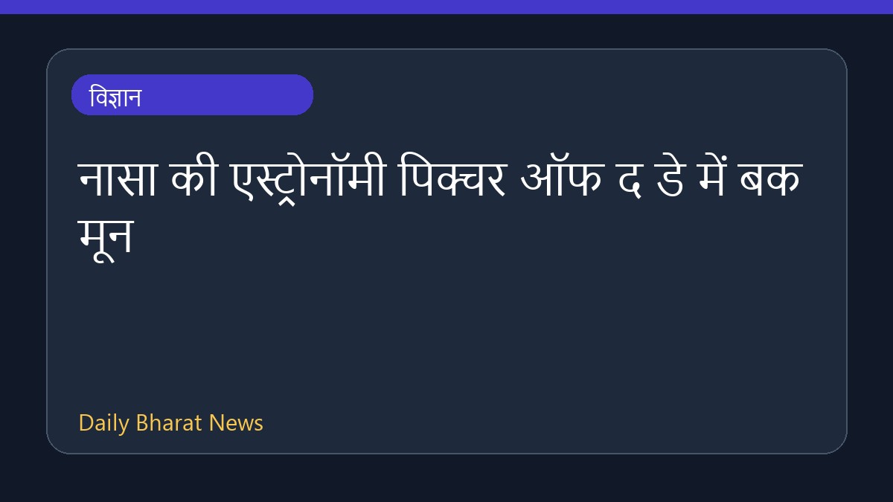

नासा की एस्ट्रोनॉमी पिक्चर ऑफ द डे में बक मून

नासा की एस्ट्रोनॉमी पिक्चर ऑफ द डे यानी एपीओडी श्रृंखला में एक अगस्त 2026 के लिए बक मून और बेल्ट ऑफ वीनस को शामिल किया गया है। इस प्रतिष्ठित मंच पर हर दिन ब्रह्मांड की एक नई और आकर्षक तस्वीर प्रदर्शित की जाती है, जिसके साथ किसी पेशेवर खगोलविद द्वारा लिखा गया संक्षिप्त विवरण भी होता है। इस पहल का उद्देश्य लोगों को हमारे ब्रह्मांड के विभिन्न पहलुओं से परिचित कराना और खगोल विज्ञान में रुचि बढ़ाना है। इस विशेष दिन की तस्वीर और उससे जुड़ी जानकारी के लिए वेबसाइट पर आर्काइव देखा जा सकता है।
मूल स्रोत: NASA
APOD: 2026 August 1 – Buck Moon and Belt of Venus ↗
APOD: 2026 August 1 – Buck Moon and Belt of Venus ↗